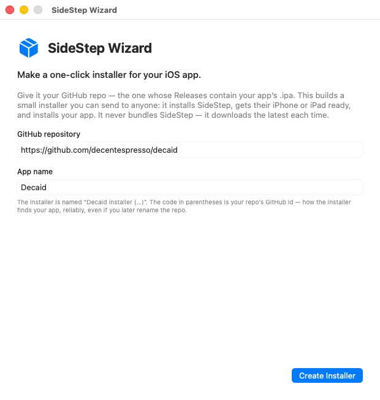
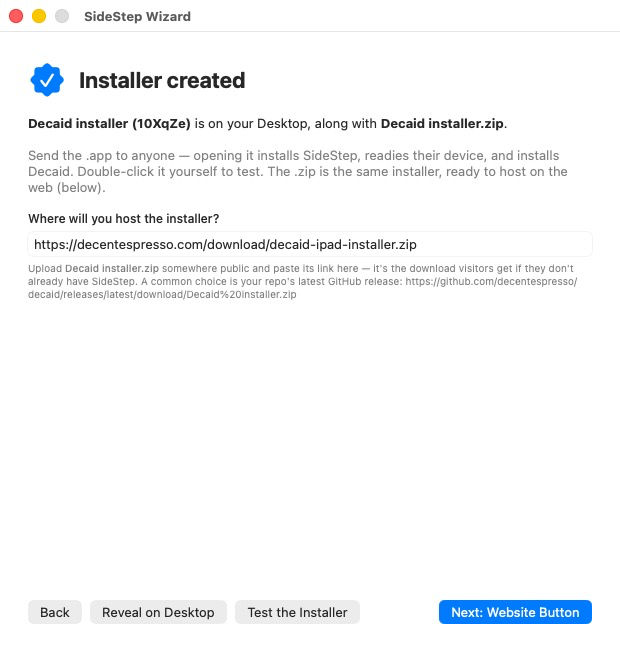
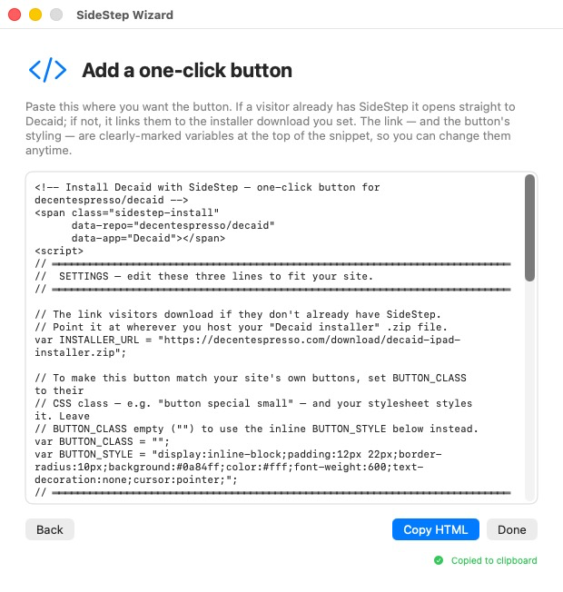

SideStep Wizard lets you hand anyone a one-click installer for your iOS app — no Xcode, and no developer account on their end. Point it at your app's GitHub repo once, and it builds a small installer you can send to people or link from your website. Opening it installs SideStep, gets their iPhone or iPad ready, and installs your app.
Download SideStep Wizard
notarized .dmg — macOS 14 (Sonoma) or newer, Apple Silicon
It never bundles a copy of SideStep — the installer downloads the latest SideStep at run time, so nobody is ever stuck on a stale version.
Enter the repo whose Releases hold your app's .ipa, and an app name. The wizard looks
up the repo's immutable GitHub id — no URL shortener, nothing to register — so the installer keeps
finding your app even if you later rename the repo.

Click Create Installer and two files land on your Desktop: the installer app
(<app> installer (…).app) and a <app> installer.zip. Send the
app to anyone, or double-click it yourself to test. The .zip is the same installer,
ready to host on the web — tell the wizard where you'll put it, and that becomes the download visitors
get if they don't already have SideStep.

The wizard hands you ready-to-paste HTML. The download link and the button's styling are
clearly-marked variables at the top (INSTALLER_URL, BUTTON_CLASS,
BUTTON_STYLE) — set BUTTON_CLASS to your site's own button class and it
matches your design. If a visitor already has SideStep, the button opens straight to your app; if not,
it downloads the installer that walks them through setup first.

Here's a live example — this button installs Magnatune (a music player) with SideStep. If you already have SideStep it opens straight to Magnatune; if not, it offers the Magnatune installer, which installs SideStep first and walks you through setup.
Opening the installer walks them through everything, verifying each step for real over USB:
From then on, SideStep keeps the app signed and updated in the background over Wi-Fi — so a sideloaded app behaves like a normal, permanently-installed one.
SideStep Wizard is part of SideStep — a small macOS menu-bar app that installs iOS apps onto your own device using your own Apple ID. It is signed with an Apple Developer ID and notarized by Apple.